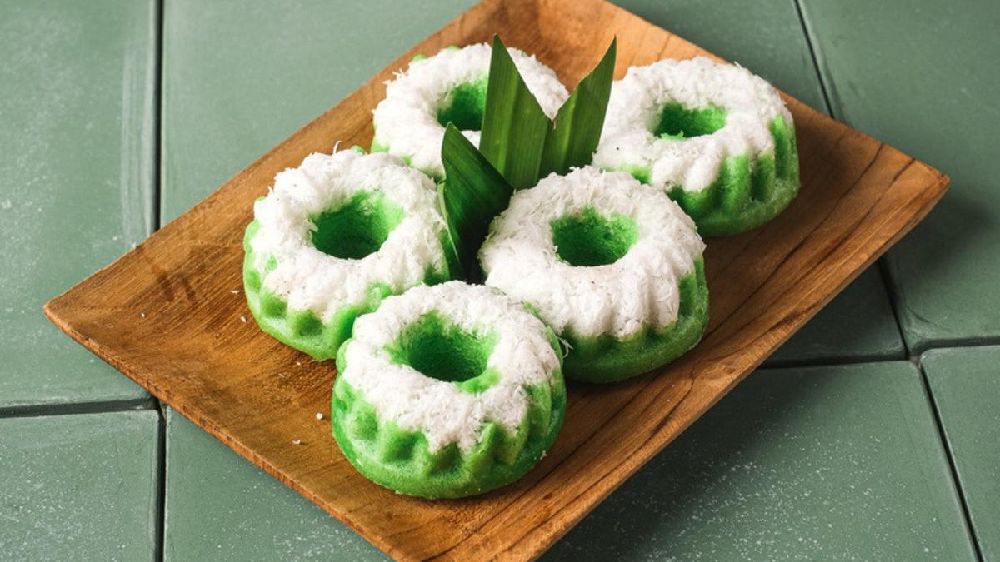
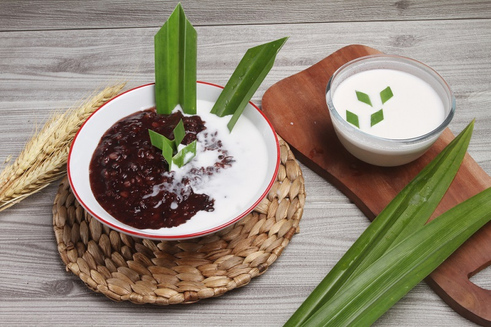

Local Food
I love my local traditional food. It's really tasty.
Lemper Bakar
savoury snack made of glutinous rice filled with shredded chicken

Sate
skewered and grilled meat, marinated in a variety of spices

Putu Ayu
steamed cake with a sprinkle of fresh coconut shavings

Bubur Ketan Hitam
softly boiled black glutinous rice served with thick coconut milk